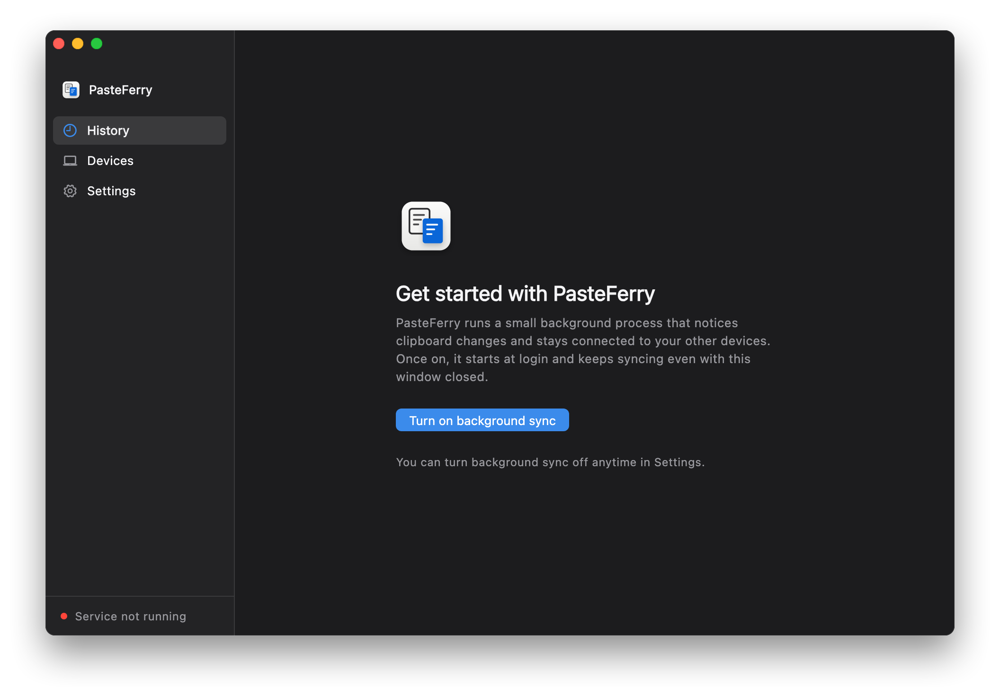

PasteFerry / Quick start
Quick start
Install the app, pick a way to connect, and pair your computers. On the same network it takes a few minutes; after that, copying just syncs.
Step 1
Install the app on each computer
One on every computer you want to sync. Mac, Windows and Linux mix freely.
Mac
- Download the DMG, open it and drag PasteFerry into Applications.There's one for Apple silicon and one for Intel; the download page helps you choose.
- Open it from Applications.The first time, macOS says it can't verify the developer: go to System Settings → Privacy & Security and click Open Anyway near the bottom.
- Click Turn on background sync. When macOS asks about clipboard access and finding devices on your local network, allow both.
Windows
- Run PasteFerry-Setup.exe; no administrator rights needed.If you see "Windows protected your PC", click More info, then Run anyway.
- Open PasteFerry and click Turn on background sync. Allow it if Windows Firewall asks. After you close the window it keeps running in the notification area.
Linux
- On Ubuntu, Debian and similar, install the .deb; on other distributions, extract the tar.gz and run the
install.shinside. - Open PasteFerry from the app menu and click Turn on background sync.

Step 2
Pick a way to connect
On the same network there's nothing to set up. Across networks, your computers find each other through a public server or Tailscale, and nothing you copy is stored there.
Same network
- Install the app on each computer and click Turn on background sync.
- Allow PasteFerry if Windows Firewall asks, and allow it to find devices on your local network if macOS asks.
- Show a code on one, enter it on the other and compare fingerprints. On a different subnet, also enter the address shown under the code; see the same network guide.
No server address to enter.
Same network guide →- Best for
- Computers on the same Wi‑Fi or wired network, such as at home or in the office.
- You need
- Nothing. Just the app on each computer.
- Keep in mind
- No sync away from that network; it resumes when you're back. If wired and Wi‑Fi are on different subnets, as in many offices, you also enter an address when pairing.
Public server
- In your cloud provider's security group, open TCP 8787, UDP 3478 and UDP 32768–60999.
- Log in with ssh, download the install script and run it with the public IP:
sudo ./install.sh PUBLIC_IP. - In Settings on each computer, enter
ws://PUBLIC_IP:8787/signal, press Return, then pair.
Open http://PUBLIC_IP:8787/healthz in a browser; ok means it's running.
- Best for
- Computers spread across networks that should sync from anywhere. The simplest way across networks.
- You need
- A Linux VM with a public IP, as root; the smallest one is enough.
- Keep in mind
- The VM costs money. When a direct connection fails, the relay is limited by the server's bandwidth. In mainland China, use the IP unless the domain has an ICP filing.
Tailscale
- Install Tailscale on each computer and sign in to the same account.
- On the computer you'll pair with, run
tailscale ip -4and note the address starting with 100. - When pairing, on the computer entering the code, click On a different subnet? and enter that address.
No server. A Tailscale address doesn't change, so you enter it once, when pairing.
Tailscale guide →- Best for
- Computers on different networks, without a public server.
- You need
- Tailscale on every computer, signed in to one account.
- Keep in mind
- Every computer that runs PasteFerry needs Tailscale, connected. When Tailscale can't connect peer to peer it relays through DERP servers, which can be slow.
Step 3
Pair your computers
Pair each two computers once, and you're done.
- On one computer, open Devices and click Add device. It shows a 6-character code, valid for 5 minutes, and this computer's address below it.
- On the other, click Add device too, switch to Enter a code and type it in.On a different subnet, or with Tailscale, click On a different subnet? and enter the other computer's address as well.
- Both screens show the same two fingerprint lines. Check them character by character, then confirm.This stops anyone in the middle from posing as your device. Don't skip it.


Now copy something.
Copy text, an image or a file on one computer and press ⌘V or Ctrl+V on the other. Everything copied on either side is in the history.
Need help? Same network questions · Tailscale questions · Public server questions · Report an issue